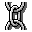

Control Type
Menu Option
Function
Connects the currently selected event symbol in the fault tree to the
selected primary event in the database.
Location
OpenFTA menubar -> Edit -> Link
Shortcuts
Accelerator: Ctrl+I.
Toolbar:

Pre-conditions
A primary event is selected on the OpenFTA canvas area. The database
displayed in the OpenPED window is associated with the fault tree
depicted on the canvas and an event in the Primary Events list is
selected.
Operation
On activation, the currently selected event in the fault tree is linked
to the selected primary event in the database. This causes the ID,
Probability value and Description for the selected fault tree event
symbol to be displayed on the canvas.
If the Type of event in the database differs from that of the selected
event in the tree, then confirmation is requested before the action is
completed. On completion the symbol on the canvas is changed to the
type held within the database.
Note that a Link operation cannot be undone using the Undo option.
Cross References
Database